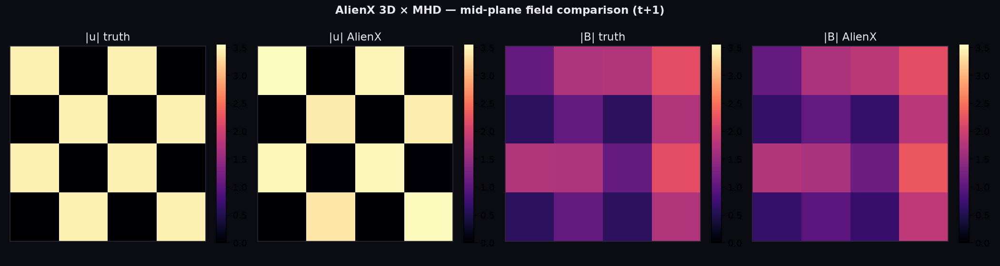

ALIENX / MHD · GEOMETRIC FIELD LAB · LIVE RECORDED PROTOCOL
This is an interactive view of the recorded 65-epoch, 32³ AlienX MHD release. Select a diagnostic to inspect the actual run artifacts.

SO(3) local frames, relevance-gated complex QSA, phase modulation, regime conditioning, and conservation-aware objectives remain the AlienX substrate. MHD is the outer shell for velocity/magnetic fields, Re/Rm conditioning, spectral targets, and divergence diagnostics.
Held-out local readout: velocity error 0.1807; magnetic error 0.00891.
Open executable release ↗